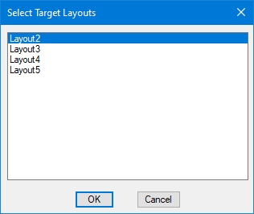

Copy to Layouts
This page is delivered for consistency purposes only, as part of the LeeMac sample module of DynALisp, which shows how DynALisp turns existing AutoLISP programs into a module. The program and its description are the work of Lee Mac, who keeps all the credit for them. The original page, with the latest version, is on Lee Mac's website: https://lee-mac.com/copytolayouts.html
See also Delete from Layouts.
| Function Syntax | LM-CopyToLayouts – original syntax: C2L / C2AL (see aliases) |
| Current Version | 1.2 |
| Compatible with AutoCAD for Mac? | No |
| Compatible with AutoCAD LT? | Yes |
| Original Page | lee-mac.com/copytolayouts.html |
Program Description
This program enables a user to quickly copy a selection of objects to all or selected layouts in a drawing.
Upon calling the program with C2L at the AutoCAD command line, the user is prompted to make a selection of objects residing in the current layout to copy. Following selection, the program calls my List Box function and the user is prompted via a dialog interface (illustrated below) to choose one or more layouts to which the set of objects will be copied.
Alternatively, if the user issues the command syntax C2AL at the AutoCAD command line, every object in the selection is automatically copied to all layouts in the drawing (except the active layout), without the use of the dialog interface.
The program will copy the selected objects using a deep-clone method, ensuring that all information associated with the selected objects is retained.
Dialog Preview

Bundled program notes
;;-----------------------=={ Copy to Layouts }==------------------------;;
;; ;;
;; This program enables a user to quickly copy a selection of objects ;;
;; to all or selected layouts in a drawing. ;;
;; ;;
;; Upon calling the program with 'C2L' at the command line, the user ;;
;; is prompted to make a selection of objects in the active layout to ;;
;; copy. Following selection, the user is prompted, via a dialog ;;
;; interface, to choose one or more layouts to which the objects will ;;
;; be copied. ;;
;; ;;
;; If the program is called with 'C2AL' at the command line, every ;;
;; object in the selection is automatically copied to all layouts ;;
;; in the drawing, without the use of the dialog interface. ;;
;; ;;
;;----------------------------------------------------------------------;;
;; Author: Lee Mac, Copyright © 2013 - www.lee-mac.com ;;
;;----------------------------------------------------------------------;;
;; Version 1.0 - 10-02-2011 ;;
;; ;;
;; First Release. ;;
;;----------------------------------------------------------------------;;
;; Version 1.1 - 08-07-2013 ;;
;; ;;
;; Entire program rewritten. ;;
;;----------------------------------------------------------------------;;
Command Names And Aliases
As in every DynALisp module, each program of this sample module has one main command, named LM-*, and the original command names of Lee Mac's page are kept as its aliases: they run the same command, and can be added, renamed or removed in Dyl-Suite (saved in Resources\Aliases.csv). The rows marked ↳ are child commands of LM-CopyToLayouts: they are run by their alias, or picked from LM-CopyToLayouts when it lists them (their command is named Pst-*).
| Command | Aliases | Name |
|---|---|---|
| LM-CopyToLayouts | C2L | Copy To Layouts |
| ↳ C2AL | – | Copy To All Layouts |